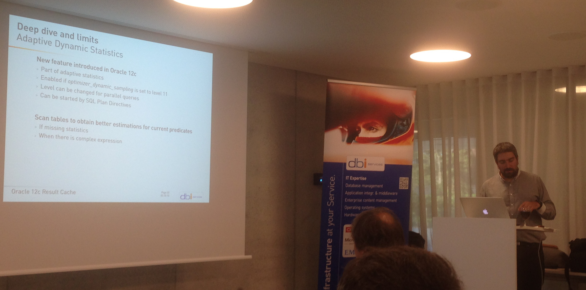
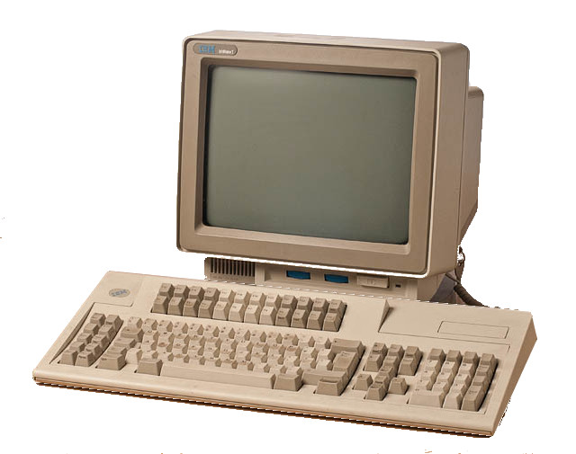

This was first published on https://www.dbi-services.com/blog/result-cache-and-12c-fetch-first-n-rows/ (2015-10-04)
Republishing here for new followers. The content is related to the versions available at the publication date.
.

At our bi-annual dbiXchange I was talking with Nicolas Jardot about his presentation on Result Cache (don’t forget Jérome witt session about RC at DOAG) where he has shown an unexpected behavior on ‘fetch first n rows queries’.Everything is in the execution plan:
PLAN_TABLE_OUTPUT
---------------------------------------------------------------------------------------------------------------------------------
SQL_ID 799vsxdg75sm6, child number 0
-------------------------------------
select /*+ result_cache */ * from DEMO order by n fetch first 5 rows only
Plan hash value: 896528075
--------------------------------------------------------------------------------------------------------------------------------
| Id | Operation | Name | Starts | E-Rows | A-Rows | A-Time | Buffers | Reads |
--------------------------------------------------------------------------------------------------------------------------------
| 0 | SELECT STATEMENT | | 1 | | 5 |00:00:02.49 | 376 | 207 |
|* 1 | VIEW | | 1 | 100K| 5 |00:00:02.49 | 376 | 207 |
| 2 | RESULT CACHE | aanuwt05phj34078f253ht7x0x | 1 | | 100K|00:00:02.25 | 376 | 207 |
| 3 | WINDOW NOSORT | | 1 | 100K| 100K|00:00:01.72 | 376 | 207 |
| 4 | TABLE ACCESS BY INDEX ROWID| DEMO | 1 | 100K| 100K|00:00:00.99 | 376 | 207 |
| 5 | INDEX FULL SCAN | DEMO_PK | 1 | 100K| 100K|00:00:00.25 | 210 | 207 |
--------------------------------------------------------------------------------------------------------------------------------
Predicate Information (identified by operation id):
---------------------------------------------------
1 - filter("from$_subquery$_002"."rowlimit_$$_rownumber"<=5)
Result Cache Information (identified by operation id):
------------------------------------------------------
2 - column-count=4; dependencies=(DEMO.DEMO); attributes=(ordered); name="select /*+ result_cache */ * from DEMO "
I want to fetch only the first 5 rows, I access through an index scan so that I don’t need a sort. Then I expect to read only the 5 first entrie in the index – only a few blocks.
I want to use the result cache in case I run my query again. That should increase the performance of subsequent runs, but should not decrease the performance of the first run – except the small overhead to put 5 rows into the result cache.
But look at it again: I’ve read 100000 rows. The whole table. And 100000 have gone to the result cache:
SQL> select id,type,status,cache_id,row_count,name from v$result_cache_objects;
ID TYPE STATUS CACHE_ID ROW_COUNT NAME
---------- ---------- --------- ------------------------------ ---------- ----------------------
0 Dependency Published DEMO.DEMO 0 DEMO.DEMO
1 Result Published a46rp35xsfhzg6ukq622ax96xh 100000 select /*+ result_cach
My first idea is that it is a bug. When I put a ‘result_cache’ hint, I expect the final result to go to result cache. Not an intermediate one. If I want an intermediate one, I can put the hint in a subquery. Of course, it’s bad to read all table rows when I explicitly want only 5 ones.
I addition to that, I expected that the behavior here would be the same as when forcing the table result cache mode. But it’s not the case. Setting ‘result_cache (mode force)’ instead of using the result_cache hint caches the final result – the 5 rows.
Look, when setting both, I’ve two results going to the cache:
SQL> alter table DEMO result_cache (mode force);
Table altered.
SQL> select /*+ result_cache */ * from DEMO order by n fetch first 5 rows only;
N X
---------- ----------
1 1
2 .5
3 .3
4 .3
5 .2
SQL> select * from table(dbms_xplan.display_cursor(format=>'allstats last'));
PLAN_TABLE_OUTPUT
--------------------------------------------------------------------------------------------------------------------------------------------------------------------------------------------------------
SQL_ID 799vsxdg75sm6, child number 0
-------------------------------------
select /*+ result_cache */ * from DEMO order by n fetch first 5 rows only
Plan hash value: 896528075
------------------------------------------------------------------------------------------------------------------------
| Id | Operation | Name | Starts | E-Rows | A-Rows | A-Time | Buffers |
------------------------------------------------------------------------------------------------------------------------
| 0 | SELECT STATEMENT | | 1 | | 5 |00:00:02.46 | 376 |
| 1 | RESULT CACHE | 2j3s6quuam85248yh8458tcprb | 1 | | 5 |00:00:02.46 | 376 |
|* 2 | VIEW | | 1 | 100K| 5 |00:00:02.46 | 376 |
| 3 | RESULT CACHE | ch5d2dt62d5n485utqj03pftw2 | 1 | | 100K|00:00:02.22 | 376 |
| 4 | WINDOW NOSORT | | 1 | 100K| 100K|00:00:01.70 | 376 |
| 5 | TABLE ACCESS BY INDEX ROWID| DEMO | 1 | 100K| 100K|00:00:00.97 | 376 |
| 6 | INDEX FULL SCAN | DEMO_PK | 1 | 100K| 100K|00:00:00.24 | 210 |
------------------------------------------------------------------------------------------------------------------------
Predicate Information (identified by operation id):
---------------------------------------------------
2 - filter("from$_subquery$_002"."rowlimit_$$_rownumber" select id,type,status,cache_id,row_count,name from v$result_cache_objects;
ID TYPE STATUS CACHE_ID ROW_COUNT NAME
---------- ---------- --------- ------------------------------ ---------- ----------------------
0 Dependency Published DEMO.DEMO 0 DEMO.DEMO
1769 Result Published 9jdwtku77k9ap60x1anfqsd2ny 100000 select /*+ result_cach
1768 Result Published b4aa0hncfmd7bcdxnwf4mdyyj0 5 select /*+ result_cach
It think it’s bad. I’ll open a SR about it.
When you have hundreds of lines to display to the user, you use pagination: display the first 15 lines with a ‘next’ button. Then the user can display the 15 next lines with the ‘next’ button, etc.

However, we can take an advantage of the fact that result cache stores all the rows. The first run will put all rows in result cache and display only the first page. The second run will get the next rows from the result set without the need to re-run the query.
Here is the first page:
SQL> variable next number
SQL> variable offset number
SQL> exec :offset := 0 ; :next:=5
PL/SQL procedure successfully completed.
SQL> select /*+ result_cache */ * from DEMO order by n offset :offset rows fetch next :next rows only;
N X
---------- ----------
1 1
2 .5
3 .3
4 .3
5 .2
SQL> select * from table(dbms_xplan.display_cursor(format=>'allstats last'));
PLAN_TABLE_OUTPUT
------------------------------------------------------------------------------------------------------------------------------------
SQL_ID 36gjax1bq229s, child number 0
-------------------------------------
select /*+ result_cache */ * from DEMO order by n offset :offset rows
fetch next :next rows only
Plan hash value: 1397896352
---------------------------------------------------------------------------------------------------------------------------------
| Id | Operation | Name | Starts | E-Rows | A-Rows | A-Time | Buffers | Reads |
---------------------------------------------------------------------------------------------------------------------------------
| 0 | SELECT STATEMENT | | 1 | | 5 |00:00:02.51 | 376 | 208 |
|* 1 | FILTER | | 1 | | 5 |00:00:02.51 | 376 | 208 |
|* 2 | VIEW | | 1 | 100K| 5 |00:00:02.51 | 376 | 208 |
| 3 | RESULT CACHE | 18fnpv7tfn444bghaxs5mb20kk | 1 | | 100K|00:00:02.26 | 376 | 208 |
| 4 | WINDOW NOSORT | | 1 | 100K| 100K|00:00:01.74 | 376 | 208 |
| 5 | TABLE ACCESS BY INDEX ROWID| DEMO | 1 | 100K| 100K|00:00:01.00 | 376 | 208 |
| 6 | INDEX FULL SCAN | DEMO_PK | 1 | 100K| 100K|00:00:00.25 | 210 | 208 |
---------------------------------------------------------------------------------------------------------------------------------
Predicate Information (identified by operation id):
---------------------------------------------------
1 - filter(:OFFSET=0) THEN FLOOR(TO_NUMBER(TO_CHAR(:OFFSET))) ELSE 0 END +:NEXT)
2 - filter(("from$_subquery$_002"."rowlimit_$$_rownumber"=0) THEN
FLOOR(TO_NUMBER(TO_CHAR(:OFFSET))) ELSE 0 END +:NEXT AND "from$_subquery$_002"."rowlimit_$$_rownumber">:OFFSET))
Here is the second page:
SQL> exec :offset := 5 ; :next:=5
PL/SQL procedure successfully completed.
SQL> select /*+ result_cache */ * from DEMO order by n offset :offset rows fetch next :next rows only;
N X
---------- ----------
6 .2
7 .1
8 .1
9 .1
10 .1
SQL> select * from table(dbms_xplan.display_cursor(format=>'allstats last'));
PLAN_TABLE_OUTPUT
--------------------------------------------------------------------------------------------------------------------------------------------------------------------------------------------------------
SQL_ID 36gjax1bq229s, child number 0
-------------------------------------
select /*+ result_cache */ * from DEMO order by n offset :offset rows
fetch next :next rows only
Plan hash value: 1397896352
--------------------------------------------------------------------------------------------------------------
| Id | Operation | Name | Starts | E-Rows | A-Rows | A-Time |
--------------------------------------------------------------------------------------------------------------
| 0 | SELECT STATEMENT | | 1 | | 5 |00:00:00.48 |
|* 1 | FILTER | | 1 | | 5 |00:00:00.48 |
|* 2 | VIEW | | 1 | 100K| 5 |00:00:00.48 |
| 3 | RESULT CACHE | 18fnpv7tfn444bghaxs5mb20kk | 1 | | 100K|00:00:00.24 |
| 4 | WINDOW NOSORT | | 0 | 100K| 0 |00:00:00.01 |
| 5 | TABLE ACCESS BY INDEX ROWID| DEMO | 0 | 100K| 0 |00:00:00.01 |
| 6 | INDEX FULL SCAN | DEMO_PK | 0 | 100K| 0 |00:00:00.01 |
--------------------------------------------------------------------------------------------------------------
Predicate Information (identified by operation id):
---------------------------------------------------
1 - filter(:OFFSET=0) THEN FLOOR(TO_NUMBER(TO_CHAR(:OFFSET))) ELSE 0 END +:NEXT)
2 - filter(("from$_subquery$_002"."rowlimit_$$_rownumber"=0) THEN
FLOOR(TO_NUMBER(TO_CHAR(:OFFSET))) ELSE 0 END +:NEXT AND
"from$_subquery$_002"."rowlimit_$$_rownumber">:OFFSET))
The second run had no rows to read from the table.
If we know that the user will never go further than a few pages, the we can add a subquery with rownum.
Here is a pagination query that get at maximum 30 rows paged 5 by 5:
SQL> variable next number
SQL> variable offset number
SQL> exec :offset := 0 ; :next:=5
PL/SQL procedure successfully completed.
SQL> select * from (
2 select /*+ result_cache */ * from (
3 select * from DEMO order by n fetch first 30 rows only
4 ) order by n offset :offset rows fetch next :next rows only
5 )
6 /
N X
---------- ----------
1 1
2 .5
3 .3
4 .3
5 .2
SQL> select * from table(dbms_xplan.display_cursor(format=>'allstats last'));
PLAN_TABLE_OUTPUT
------------------------------------------------------------------------------------------------------------------------------------
SQL_ID 1yubnzwpd2z2g, child number 0
-------------------------------------
select * from ( select /*+ result_cache */ * from ( select * from
DEMO order by n fetch first 30 rows only ) order by n offset :offset
rows fetch next :next rows only )
------------------------------------------------------------------------------------------------------------------------------------
| Id | Operation | Name | Starts | E-Rows | A-Rows | A-Time | Buffers | Reads |
------------------------------------------------------------------------------------------------------------------------------------
| 0 | SELECT STATEMENT | | 1 | | 5 |00:00:00.01 | 5 | 1 |
|* 1 | FILTER | | 1 | | 5 |00:00:00.01 | 5 | 1 |
|* 2 | VIEW | | 1 | 30 | 5 |00:00:00.01 | 5 | 1 |
| 3 | RESULT CACHE | gbwdtyz67n3kk0qkgw86s4jk67 | 1 | | 30 |00:00:00.01 | 5 | 1 |
| 4 | WINDOW NOSORT | | 1 | 30 | 30 |00:00:00.01 | 5 | 1 |
| 5 | VIEW | | 1 | 30 | 30 |00:00:00.01 | 5 | 1 |
|* 6 | VIEW | | 1 | 30 | 30 |00:00:00.01 | 5 | 1 |
|* 7 | WINDOW NOSORT STOPKEY | | 1 | 100K| 30 |00:00:00.01 | 5 | 1 |
| 8 | TABLE ACCESS BY INDEX ROWID| DEMO | 1 | 100K| 31 |00:00:00.01 | 5 | 1 |
| 9 | INDEX FULL SCAN | DEMO_PK | 1 | 100K| 31 |00:00:00.01 | 3 | 1 |
------------------------------------------------------------------------------------------------------------------------------------
SQL> exec :offset := 5 ; :next:=5
PL/SQL procedure successfully completed.
SQL> select * from (
2 select /*+ result_cache */ * from (
3 select * from DEMO order by n fetch first 30 rows only
4 ) order by n offset :offset rows fetch next :next rows only
5 )
6 /
N X
---------- ----------
6 .2
7 .1
8 .1
9 .1
10 .1
SQL> select * from table(dbms_xplan.display_cursor(format=>'allstats last'));
PLAN_TABLE_OUTPUT
------------------------------------------------------------------------------------------------------------------------------------
SQL_ID 1yubnzwpd2z2g, child number 0
-------------------------------------
select * from ( select /*+ result_cache */ * from ( select * from
DEMO order by n fetch first 30 rows only ) order by n offset :offset
rows fetch next :next rows only )
-----------------------------------------------------------------------------------------------------------------
| Id | Operation | Name | Starts | E-Rows | A-Rows | A-Time |
-----------------------------------------------------------------------------------------------------------------
| 0 | SELECT STATEMENT | | 1 | | 5 |00:00:00.01 |
|* 1 | FILTER | | 1 | | 5 |00:00:00.01 |
|* 2 | VIEW | | 1 | 30 | 5 |00:00:00.01 |
| 3 | RESULT CACHE | gbwdtyz67n3kk0qkgw86s4jk67 | 1 | | 30 |00:00:00.01 |
| 4 | WINDOW NOSORT | | 0 | 30 | 0 |00:00:00.01 |
| 5 | VIEW | | 0 | 30 | 0 |00:00:00.01 |
|* 6 | VIEW | | 0 | 30 | 0 |00:00:00.01 |
|* 7 | WINDOW NOSORT STOPKEY | | 0 | 100K| 0 |00:00:00.01 |
| 8 | TABLE ACCESS BY INDEX ROWID| DEMO | 0 | 100K| 0 |00:00:00.01 |
| 9 | INDEX FULL SCAN | DEMO_PK | 0 | 100K| 0 |00:00:00.01 |
-----------------------------------------------------------------------------------------------------------------
The first run reads 30 rows, put them into the result cache and returns the first 5. The second run get the first 10 rows from result cache, skips the first 5 and returns next 5 ones.
We have a solution to use offset in an optimal way, but I don’t know if is an expected behavior, bug or side effect. The same idea can be done with rownum and subqueries. You have also to think about how static the base tables are. the ‘snapshot’ hint may be use to allow stale results (see previous blog post) but not documented yet.
We know a lot of bugs and side effects about result cache. We know a lot of unexpected behavior and performance issue about first rows. Search “first rows” or “result cache” on this blog, or Jonathan Lewis blog, or on MOS and you will see that you can use it only when you have tested the cases where you use it.